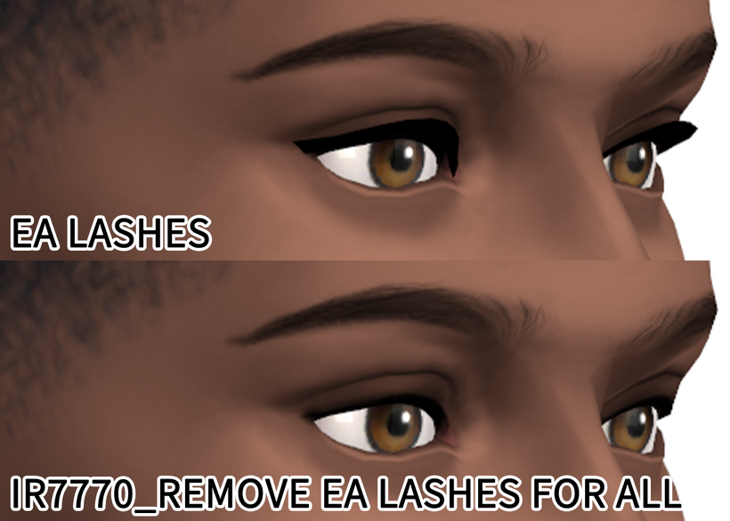
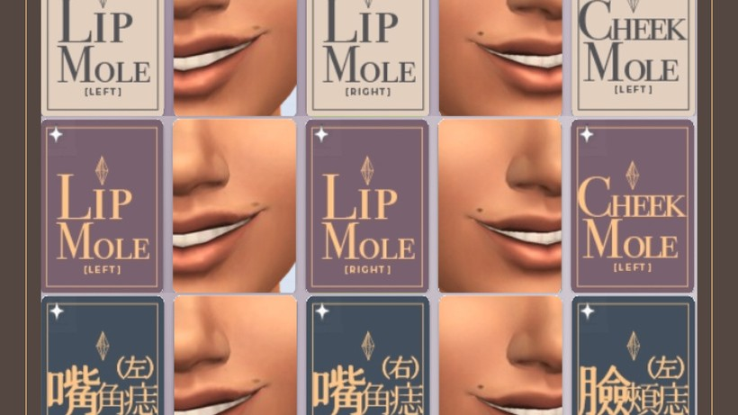
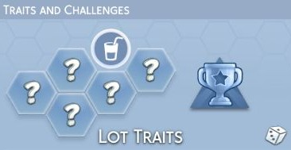

CAS背景

CAS人物不動 (自然)

CAS手部特寫
備用載點 ｜無
下載日期 ｜2025.11.10
會根據小人身高調整CAS鏡頭
(含禁用NPC隨機配戴飾品、化妝品 )
其他附加檔案
!!!!![NORTHERN SIBERIA WINDS][CAS TUNING BASE] CONTROLLED POSITION MOD V2.3.package
⤷ 人物不會跟隨添加CC而轉動

More Columns in CAS
CAS更多欄位
若欄位溢出 / 被UI擋住，可以在
「…」>「遊戲選項」>「可用性」中
調整「使用者介面比例」

CAS標籤
先挑款式，再挑語言。只能擇一下載。

更多特徵欄位

The Attachment Style Story Pack
依戀風格故事包
漢化版本 ｜!_JayESims_HealedorHurtingTheAttachmentStyleStoryPack_Autonomous_ALLINONE_CHT_BY MeowCats.package
備用載點 ｜無
所需DLC ｜無
下載版本 ｜無
下載日期 ｜2025.11.09
需下載XML注入器
2種版本請擇一下載
Autonomous_ALLINONE
⤷ 小人自主行動版本
User Directed_ALLINONE
⤷ 玩家控制版本
關鍵字對照表
載入中...